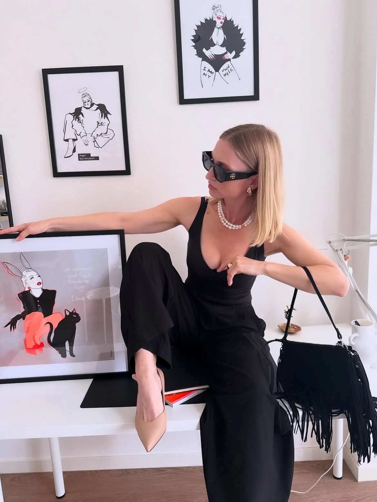
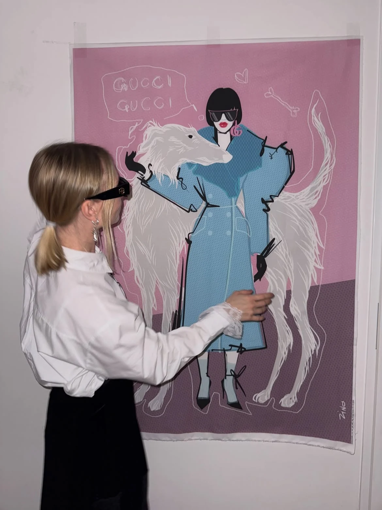

MuseLimited edition / 50 × 70 cm

ZINA
Visual artist · Amsterdam
My work is about individuality, freedom and the courage to follow your own path.
I’m inspired by personal experiences, stories, images and phrases that stay with me and become characters with their own voice.
The work
Women with a voice.
The point of view
Women with feelings,
attitude and a
point of view.
Bold lines. Handwritten thoughts.
Women who refuse to disappear.
From the studio
Art, out in the world.

Mixed-media project / Digital to physical
Urban Icons
Digital characters, handmade textiles and the memory of making things by hand.